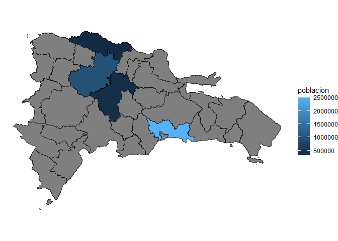
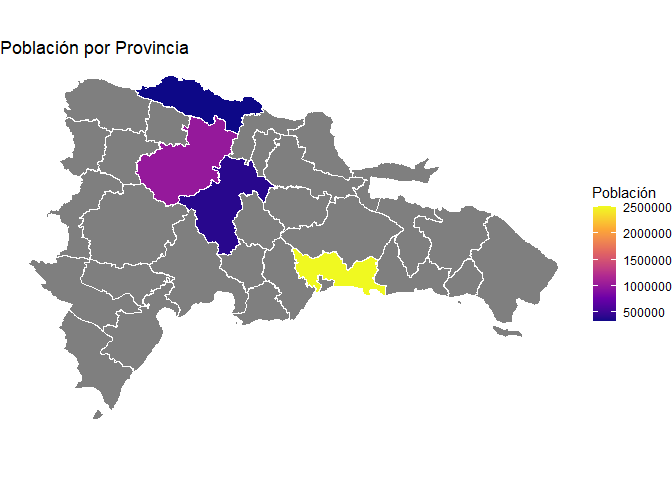

geodom proporciona acceso a un marco de datos geoespaciales estandarizados para la República Dominicana. El paquete incluye funciones para descargar y cargar eficientemente datos geográficos, limpiar nombres de unidades administrativas, y crear mapas coropléticos con detección automática del nivel geográfico.
Instalación
Puedes instalar geodom desde GitHub:
# install.packages("pak")
pak::pak("GeoDOMProject/geodomR")Uso Rápido
Cargar datos geográficos
library(geodom)
# Provincias
provincias <- gd_provinces()
# Regiones de planificación
regiones <- gd_regions()
# Municipios
municipios <- gd_municipalities()
# Otros niveles: gd_dm(), gd_sections(), gd_bparajes(), gd_zones()Crear mapas con detección automática
La función gd_map() detecta automáticamente el nivel geográfico y la mejor variable para colorear:
# Datos de ejemplo
datos <- data.frame(
provincia = c("Santo Domingo", "Santiago", "La Vega", "Puerto Plata"),
poblacion = c(2500000, 1000000, 400000, 320000)
)
# ¡Solo esto! Todo se detecta automáticamente
gd_map(datos)
#> Variable de fill detectada automáticamente: 'poblacion'
Personalizar mapas
library(ggplot2)
#> Warning: package 'ggplot2' was built under R version 4.4.3
gd_map(datos, fill = "poblacion", color = "white", linewidth = 0.3) +
scale_fill_viridis_c(option = "plasma", name = "Población") +
labs(title = "Población por Provincia")
Limpiar nombres de provincias
# Acepta variaciones como minúsculas, sin tildes, abreviaciones
gd_clean_prov_name(c("santo domingo", "Elias Pina", "la vega"))
#> [1] "Santo Domingo" "Elías Piña" "La Vega"
#> [1] "Santo Domingo" "Elías Piña" "La Vega"Funciones Principales
| Función | Descripción |
|---|---|
gd_provinces() |
Límites de las 32 provincias |
gd_regions() |
Regiones de planificación |
gd_municipalities() |
Los 158 municipios |
gd_dm() |
Distritos municipales |
gd_sections() |
Secciones censales |
gd_bparajes() |
Barrios y parajes |
gd_map() |
Crear mapa coroplético con autodetección |
gd_detect_level() |
Detectar nivel geográfico de datos |
gd_clean_prov_name() |
Limpiar/estandarizar nombres de provincias |